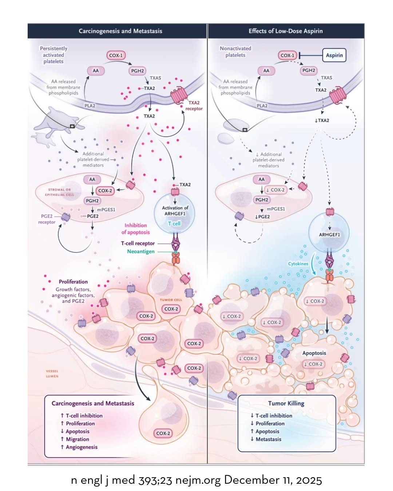

Low-dose aspirin (often called "baby aspirin"; the ASPREE trial used 100 mg a day)11 was once taken by millions of people to prevent a first heart attack. The group's current view, reflected in its most recent posts, is more cautious. For people who have never had a heart attack, stent or stroke, the largest pooled analysis shows a small reduction in heart attacks and strokes, no reduction in deaths from all causes, and a real increase in serious bleeding.1
The picture changes for people at higher risk: those who have already had a heart attack or stroke, who have stents, or who carry a lot of arterial plaque. For them the group repeatedly describes aspirin as a standard part of care.236 A number of other uses are discussed too, from high Lp(a) to infections, cancer and dementia, but these are far less settled, and the admins themselves flag where the evidence is only preliminary.
This article walks through the mechanism, the primary and secondary prevention evidence, the special situations the group debates, and the bleeding trade-off. It is a summary of group discussion, not medical advice; the admins consistently suggest talking to your own doctor before starting or stopping aspirin.
What aspirin does and why it cuts both ways
Aspirin works partly by irreversibly blocking COX-1, an enzyme in platelets (the small blood cells that help clots form). That lowers production of thromboxane A2, a molecule that makes platelets sticky.12 The same effect that makes clots less likely also makes bleeding more likely, which is why aspirin is both a heart drug and a bleeding risk.
Louis explains why that matters for heart attacks. Most heart attacks are caused by clots, but clots form when unstable plaque ruptures; they do not appear out of nowhere in clear arteries. He cites imaging studies showing that people with near-zero plaque have near-zero risk of clot-caused heart attacks.2 That is the logic behind targeting aspirin to people who actually have plaque and the risk that goes with it, instead of giving it to everyone.
Primary prevention: modest benefit, real bleeding
The 2026 ACC statement
Louis shared a quoted summary of the American College of Cardiology's 2026 scientific statement on antiplatelet therapy, which updated the position on aspirin for primary prevention (preventing a first cardiac event). When 13 trials covering 165,265 people were pooled:1
- Heart attacks and strokes were modestly reduced (hazard ratio 0.89).
- Major bleeding was increased (hazard ratio 1.43).
- Death from any cause was not reduced.
- Roughly 1 in 241 people benefited, while serious bleeding into the brain occurred in about 1 in 880.
- The benefit was clear in trials begun before 2000 and faded in later trials. The likely explanation offered is that modern statin therapy now supplies the protection aspirin once added, without the bleeding cost.
Show data
| Hazard ratio | 95% CI | |
|---|---|---|
| Heart attack or stroke | 0.89 | – |
| Major bleeding | 1.43 | – |
A review of functional foods in antiplatelet therapy, posted by Gokhan Can, makes a similar point in passing: conventional antiplatelet drugs such as aspirin are effective but unsuitable for broad public use because of bleeding risks, and aspirin "resistance" is reported in 25-30% of individuals.13 Gokhan's own list of anti-inflammatory agents likewise notes that aspirin should be used cautiously, under medical supervision, because of bleeding risk.14
ASPREE in older adults
ASPREE tested daily 100 mg aspirin against placebo in more than 19,000 healthy older adults. According to a post summarizing the dementia analysis, the original trial found no significant overall reduction in dementia, Alzheimer's disease, mild cognitive impairment or cognitive decline, and major hemorrhage occurred more often with aspirin.11 Long-term ASPREE data in JAMA Oncology, shared by Louis, show daily 100 mg aspirin did not lower cancer risk in adults 70 and older and may have increased cancer-related deaths.8
Another secondary analysis of a primary-prevention aspirin trial (9,434 participants) looked at CHIP (clonal hematopoiesis of indeterminate potential, an aging-related blood-cell mutation). CHIP was not linked to more cardiovascular events but was linked to more clinically significant bleeding. Aspirin's effects did not differ by CHIP status, so the data do not show that aspirin helps older people with CHIP in primary prevention.15
When aspirin is clearly used: established disease and plaque
Louis's short post on aspirin lists the situations where it is used after the fact: after a heart attack or stroke, and in cases of stents or diabetes.3 Louis also argues that for people with considerable plaque, aspirin is proven in large randomized trials to lower the risk of heart attacks and strokes, which is why high-risk people are routinely prescribed blood thinners and low-risk people with little plaque are not. For people with no plaque, he says, the risk of blood thinners far outweighs any potential benefit.2
A few other posts fit this plaque-centered picture:
- In the SCOT-HEART trial (4,146 people with stable chest pain, 5-year follow-up), adding coronary CT angiography to standard care lowered coronary death or nonfatal heart attack from 3.9% to 2.3%. A follow-up analysis attributed this largely to the scan showing who actually had plaque, so that aspirin and statins were started in those who needed them and could be avoided in those with no disease. The trial enrolled only chest-pain patients.16
- Matthew Budoff, quoted in a post by Louis, recommends a statin, low-dose aspirin and tight blood pressure control for people on ketogenic diets who have significant plaque on CT angiography.17
- The Bale-Doneen protocol described by Gokhan uses low-dose aspirin for secondary prevention and other high-risk individuals as one component of a multi-drug plaque program.18
- Lp(a) specialist Sam Tsimikas, quoted by Louis, uses aspirin "judiciously" in primary prevention and universally in secondary prevention.6

During a heart attack
Louis's guidance for a suspected heart attack is to chew and swallow a full-strength aspirin, call emergency services (he writes 911), and unlock the door in case you pass out. He shared an American Heart Association piece debunking "cough CPR" as a self-treatment.4
High Lp(a): opinion, mechanism and open questions
Lp(a) (lipoprotein(a)) is a genetically set, LDL-like particle that is not lowered by standard drugs. Several voices in the group favor low-dose aspirin for people with high Lp(a):
- Louis writes that baby aspirin is worth considering if you have high Lp(a), linking a physician's post and a 2025 review titled "The aspirin heart disease prevention conundrum", which argues that Lp(a) may redefine aspirin's role in primary prevention.7
- Gokhan shared lipidologist Thomas Dayspring's advice to use low-dose aspirin in all patients with Lp(a)-mediated risk unless there is a contraindication.5
- After the Lp(a)HORIZON trial, Tsimikas wrote that Lp(a) risk may be managed with LDL-C at or below 65, blood pressure at or below 120, control of other risk factors and regular use of proven medicines. In his Lp(a) clinic about 75% of patients take a statin, 50% ezetimibe and 50% a PCSK9 inhibitor, along with judicious aspirin in primary prevention.6
The proposed mechanism is clotting. A summary of a 2026 ATVB commentary explains that Lp(a) carries oxidized phospholipids that prompt immune cells to make tissue factor, a clot trigger, and that the apo(a) part resembles plasminogen and can compete with the body's clot-dissolving protein. Stent patients with higher Lp(a) and oxidized phospholipids showed stronger clots on a specialized test. Louis adds that aspirin reduces clotting risk.19
It is important to be clear about the strength of this evidence. The group's posts on this topic are expert opinion, a review and mechanism, not a randomized trial showing that aspirin prevents events in people with high Lp(a). Because aspirin also raises bleeding risk, this is a conversation to have with a doctor.
Infections and short-term aspirin
Louis repeatedly suggests that people with heart disease ask their doctor about taking a baby aspirin temporarily during an infection and for a week or two afterward. His reasoning is that infections raise short-term heart attack and stroke risk through inflammation and clotting.202122 An American Heart Association review of 155 studies, which he shared, found people were 4 times as likely to have a heart attack and 5 times as likely to have a stroke in the month after confirmed influenza, and 3 times as likely to have either after COVID, with risk staying elevated for a year.23
Two caveats from the posts themselves. First, the temporary-aspirin idea is Louis's suggestion, flagged in one summary as not trial-proven, and always "if your doctor approves".2123 Second, a linked 2022 meta-analysis found aspirin use associated with lower COVID mortality without more bleeding, which is observational evidence of a different kind.22
Beyond the heart: cancer, dementia and other claims
Cancer
The group's cancer discussion shows why a drug can look different across populations.
- In adults 70 and older in ASPREE, aspirin did not lower cancer risk and may have raised cancer deaths.8
- In Lynch syndrome (a hereditary condition that greatly raises colorectal cancer risk), a randomized trial of 861 people found that 600 mg daily for at least two years roughly halved colorectal cancer over 10 years. A follow-up trial under review suggests 75-100 mg may be just as effective, and UK guidelines changed after the first trial.9
- In a Nordic randomized trial of more than 3,500 colon and rectal cancer patients, 160 mg daily for three years cut recurrence by 55% in patients whose tumors carried a PIK3-pathway mutation (about 40% of patients).10
- Laboratory studies, including a 2025 Nature paper in mice, show aspirin blocking platelet thromboxane A2, which otherwise suppresses T-cell immunity against metastasizing cells. Louis describes aspirin as an immune-modulating agent, not just an anti-inflammatory one. These are mechanistic or animal findings.122425

Dementia
A new ASPREE analysis of 13,541 participants found no overall dementia benefit. In the 20% of people with the highest platelet-count genetic score, dementia occurred in about 1% on aspirin versus 3.3% on placebo (roughly a 70% lower relative risk), but major bleeding in that group was also higher, at 4.4% versus 2.1%. The authors call it hypothesis-generating, say it needs validation, and note that aspirin is not recommended for dementia prevention.1126
Other early findings
A small 6-month randomized trial of 81 mg aspirin in people with fatty liver disease (MASLD) found about a 10% reduction in liver fat, which the authors described as preliminary.27 A one-year trial found omega-3 with low-dose aspirin achieved the clinical goal in 57.7% of severe gum disease patients versus about 58% with antibiotics.28 Louis has also noted aspirin as one of several agents that inhibit IL-6-family inflammatory signaling, in a post about lifespan research in mice.29 None of these are reasons by themselves to start aspirin.
Anecdotes appear too: Louis recounted that James Watson followed a regimen including aspirin and metformin and never got cancer, which he explicitly presented as an anecdote.30 Peter Attia's supplement list, summarized by Gokhan, includes a baby aspirin a day for cardio protection, though Attia is quoted as admitting the evidence is weak.31
Bleeding and interacting substances
Bleeding is the central cost. The ACC summary gives the numbers (major bleeding HR 1.43; brain bleeding in about 1 in 880).1 The posts raise several related points:
- Platelet activity varies. Aspirin resistance is reported in 25-30% of people.13 A researcher-developed platelet reactivity score (PRESS) in people with peripheral artery disease predicted events, with scores above the median carrying a 90% higher risk over about 18 months. The post suggests such scores might one day help target aspirin to those most likely to benefit.32
- Combining blood thinners raises risk. A shared caution says high-dose nattokinase added to other blood thinners may raise bleeding risk.33
- High-dose fish oil is a more complicated case. In REDUCE-IT, the purified EPA drug icosapent ethyl had more bleeding (11.8% versus 9.9%) and more hospitalized atrial fibrillation (5.3% versus 3.9%).34 Louis warns that very high EPA doses can raise atrial fibrillation risk.35 Yet a Danish cohort found higher stored EPA linked to 36% lower bleeding-stroke risk, and pooled randomized trials showed no extra brain bleeding except a small risk with high-dose prescription EPA.36
- NSAIDs are different from aspirin. Louis notes chronic ibuprofen and similar NSAIDs raise blood pressure, kidney risk, bleeding risk and heart attack and stroke risk, and that this heart attack risk does not apply to aspirin.37
Show data
| Icosapent ethyl | Placebo | |
|---|---|---|
| Bleeding | 11.8% | 9.9% |
| Hospitalized atrial fibrillation | 5.3% | 3.9% |
Alternatives and lower-bleeding approaches
Several posts look at ways to reduce platelet hyperactivity without a drug. A review of functional foods lists omega-3s, plant polyphenols, a tomato extract and kiwifruit as promising, though the evidence is varied.13 A study in 160 people with coronary disease plus mice suggested intermittent fasting may reduce platelet activation through a gut-microbe metabolite, but experts quoted call for more research.38 The ACC summary's own explanation for aspirin's fading benefit is that modern statin therapy now delivers much of the protection without the bleeding cost.1
What this means for you
- If you have never had a heart attack, stent or stroke, discuss with your doctor whether aspirin is worthwhile: the pooled data show a small benefit and real bleeding, with no reduction in all-cause death.1
- If you have established heart disease, a stent or a prior stroke, aspirin is described across the posts as a standard part of care; do not stop on your own.36
- If you have a lot of plaque on imaging, Louis's reasoning is that aspirin is more likely to help; with little or no plaque, the bleeding risk is more likely to outweigh the benefit.216
- If your Lp(a) is high, several experts favor low-dose aspirin, but this rests on opinion and mechanism; ask your doctor to weigh your bleeding risk.5719
- If you are 70 or older and healthy, ASPREE showed no overall dementia benefit and no cancer benefit from 100 mg daily, so do not start aspirin for those reasons.811
- Tell your doctor about other blood-thinning supplements, such as nattokinase and high-dose fish oil.3334
- During a suspected heart attack, call emergency services; Louis advises also chewing a full-strength aspirin.4
Frequently asked questions
Should I take a daily baby aspirin to prevent a first heart attack?
The 2026 ACC statement summary says the guidance has shifted: aspirin modestly lowers heart attacks and strokes but increases major bleeding and does not reduce all-cause death, and benefit has faded since statins became common. Whether it suits you depends on your risk and bleeding history, so discuss it with your doctor.1
Does aspirin help if I already had a heart attack or stroke?
The group's posts describe aspirin as used after a heart attack, stroke or stent, and Tsimikas reports using it universally in secondary prevention.36
Can aspirin prevent dementia?
Not in general. ASPREE found no overall benefit. A genetic subgroup analysis found a possible benefit in people with a high platelet-count genetic score, but bleeding was also higher and the authors say it needs validation.1126
Does aspirin prevent cancer?
It depends on who is studied. It did not lower cancer risk in adults 70 and older in ASPREE, but trials in Lynch syndrome and in colorectal cancers with PIK3-pathway mutations were encouraging.8910
Is ibuprofen the same as aspirin for the heart?
No. Louis says chronic ibuprofen and similar NSAIDs raise heart attack and stroke risk, and that this does not apply to aspirin.37
Does aspirin help with niacin flushing?
Louis suggests taking a baby aspirin at the same time as niacin can mitigate the flush a little. This is a comfort tip, not a heart-protection claim, and niacin itself is not proven to reduce heart attacks.39